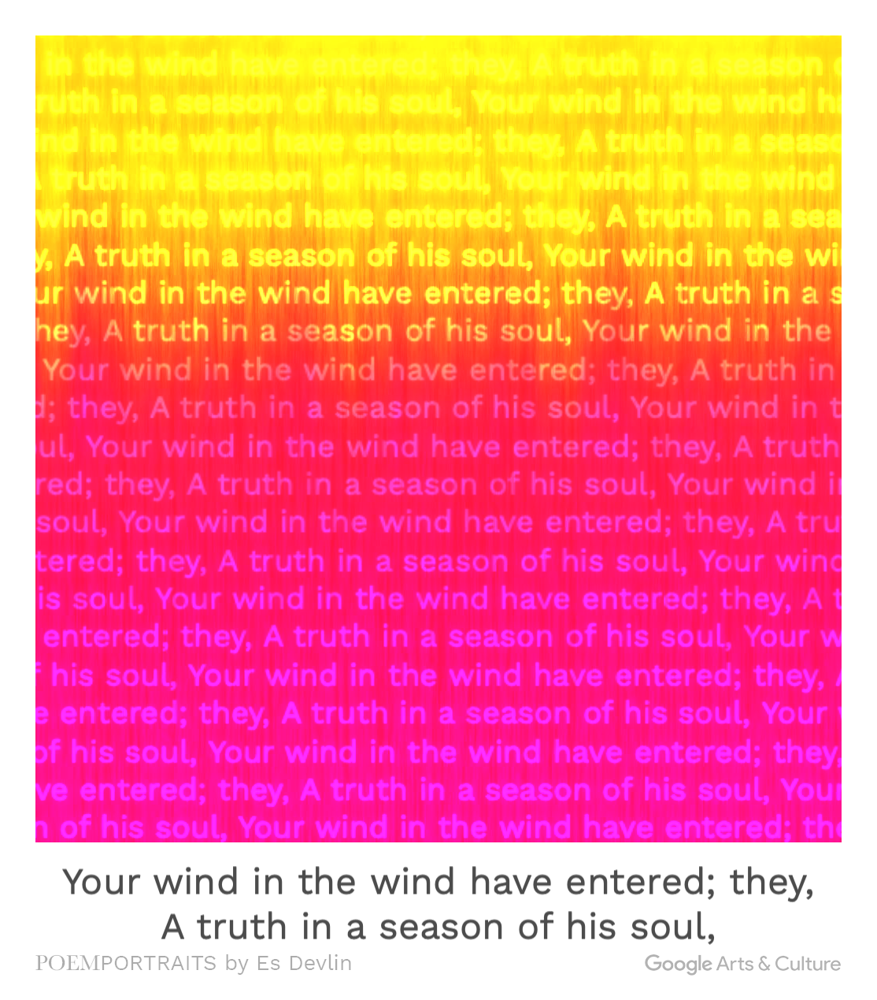

In the last part of this paragraph, I think there is something wrong, this scene is really werid that a person ge back in 10 years ago,that's
not gonna happen in reality.The good thing is that this paragraph contains lot of feelings so that we can use Ethos to persuade the aui-
dence.
在这段话的最后一部分，我认为有点不对劲，这个场景真的很奇怪，一个人回到了10年前，那不会在现实中发生。好的是，这段话包含了很多感情，所以我们可以用Ethos来说服观众。

I think this is a pretty good poem that include lots of detail about the word "wind", "your wind in the wind have entered; they, A truth in a season of his soul"
This sentence are not really clear, but when you read it, you can felt the feeling in this poem.
我认为这是一首很好的诗，其中包含了很多关于“风”这个词的细节，“你在风中的风已经进入；他们，他灵魂的一个季节里的真相”
这句话不是很清楚，但当你读到它时，你可以感受到这首诗中的感觉。